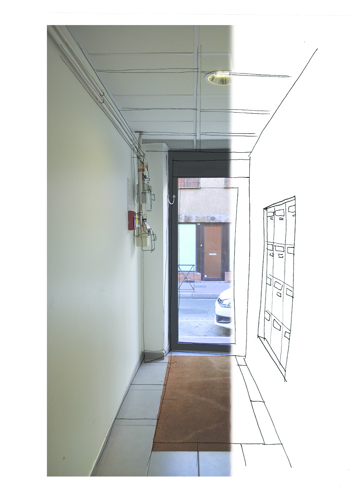
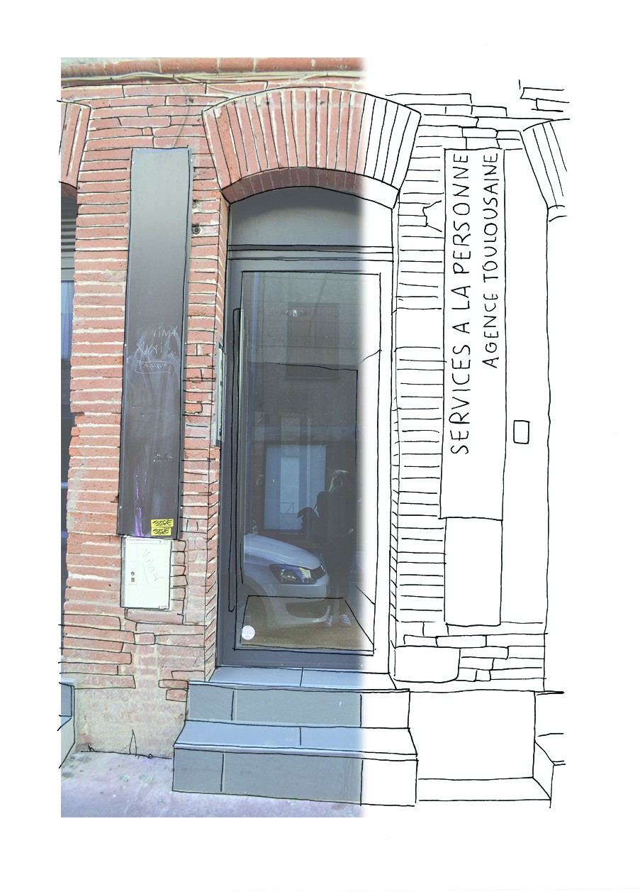
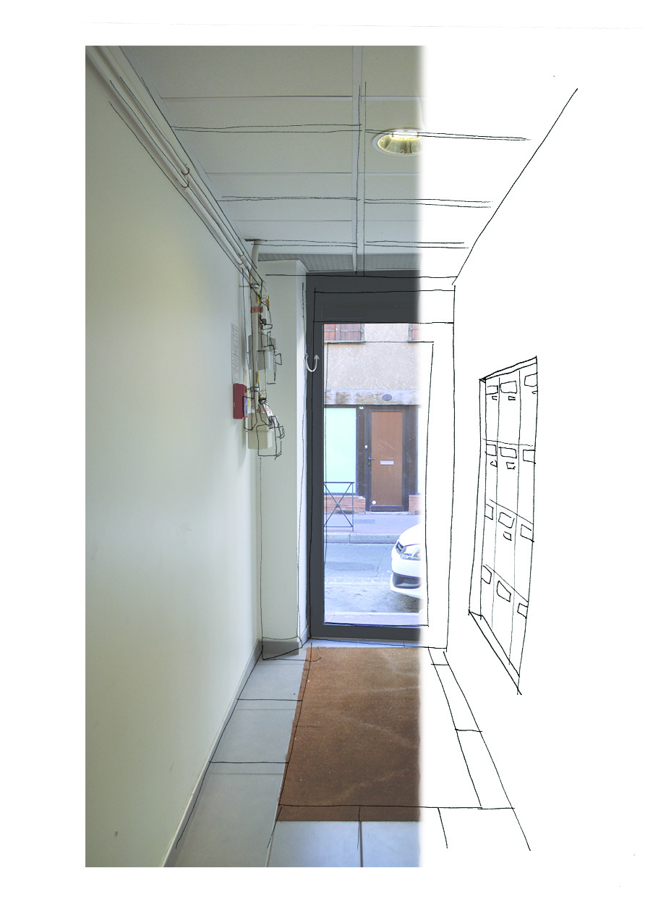
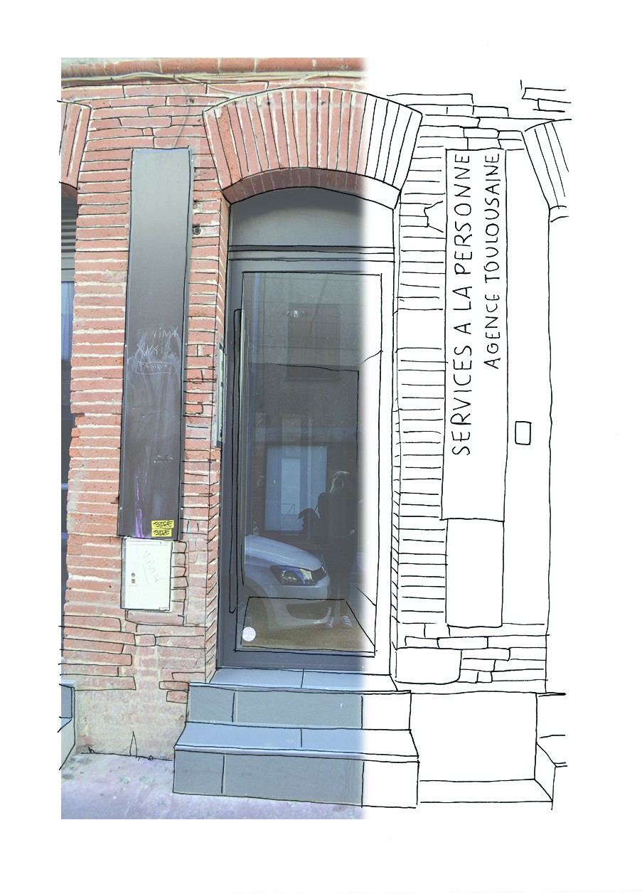

post scriptum
Quelle relation entretient-on avec nos voisins ? Peut-on et dans quelle mesure créer du lien entre les voisins d’un même immeuble ? Un lien entre voisins est réellement bénéfique car il permet d’asseoir une zone de sécurité et de confort autour du logement. Le projet alors imaginé tente d’amorcer un lien entre voisins dans des immeubles de centre ville tout en préservant l’intimité de chacun. Post Scriptum est un système d’affichage inspiré du tableau de liège. Par une forme et une utilisation ludique, il induit l’affichage d’informations plus larges que celles concernant l’immeuble. Chaque habitant est invité à y afficher ses coups de cœur culturels ou ses bons plans, ce qui permet de créer une communication indirecte entre les voisins. Post Scriptum renvoie graphiquement à une arborescence qui induit son propre scénario : il s’agit, par l’ajout de feuilles de maintenir en vie l’arbre, la vie de l’immeuble.
projet mené avec Elise Souchet et Caroline Pradet, 2017
 


